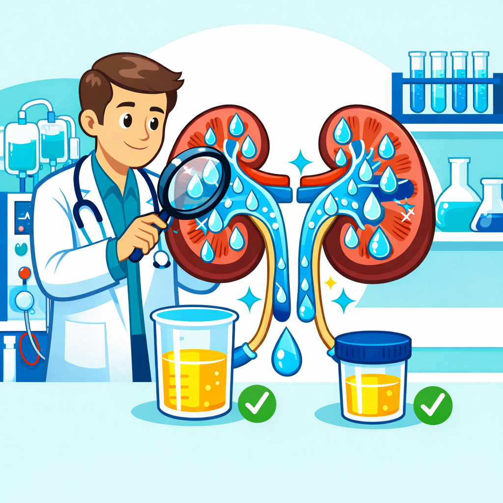

Nephrology research is advancing rapidly, yet many nephrologists in the UAE struggle to get their kidney disease research published in high-impact journals. From chronic kidney disease (CKD) studies to dialysis and renal transplant research, the journey from clinical observation to published manuscript requires expertise, time, and careful attention to journal requirements. At TaperWing Healthcare, we specialize in helping UAE nephrologists navigate this complex publishing landscape.
Challenges Nephrologists Face in Getting Research Published
Nephrologists are exceptional clinicians—their days are filled with patient care, clinical management decisions, and critical research. However, manuscript writing adds an entirely different skill set. Many nephrology specialists face common barriers to publication:
- Language and clarity: Translating complex kidney disease data into clear, publication-ready English.
- Journal requirements: Each nephrology journal has unique formatting standards, word limits, and reporting guidelines (KDIGO, KDQOL).
- Time constraints: Between patient rounds, dialysis unit management, and transplant consultations, finding time to write is nearly impossible.
- Statistical rigor: Nephrology journals demand robust statistical analysis and transparent reporting of renal outcomes.
- Desk rejections: Editors can reject manuscripts immediately if they don't align with the journal's scope or fail to meet submission standards.
"The difference between a rejected nephrology manuscript and a published one often lies in how well the research aligns with journal standards and how clearly the renal outcomes are presented."
Nephrology Research We Help Publish in UAE
At TaperWing Healthcare, we have extensive experience publishing diverse nephrology research from UAE-based clinicians. We specialize in:
Chronic Kidney Disease (CKD) Studies
CKD is a growing public health concern in the UAE. We help nephrologists publish epidemiological studies, CKD progression data, and risk factor analyses that contribute to the global understanding of kidney disease management in the Gulf region.
Dialysis Research
Whether it's hemodialysis outcomes, peritoneal dialysis innovations, or vascular access complications, we help structure and publish dialysis-related clinical research to the highest standards expected by journals like Kidney International and Nephrology Dialysis Transplantation.
Renal Transplantation Case Reports and Series
Transplant centers across the UAE generate valuable case reports on complications, novel surgical techniques, and long-term allograft outcomes. We help format these as compelling case reports or case series for peer-reviewed publication.
Clinical Trial Data
Nephrologists participating in multi-center clinical trials need specialized support in manuscript preparation, especially when adhering to CONSORT guidelines and managing co-author coordination across multiple sites.
Our Manuscript Writing Process for Kidney Disease Research
We follow a structured, collaborative process to ensure your nephrology research achieves publication success:
Step 1: Initial Consultation & Research Assessment
We meet with you to understand your research question, data, and target journals. We assess the manuscript scope and identify the most appropriate nephrology journals for your work.
Step 2: Manuscript Structuring & Outlining
Our medical writers create a detailed outline that organizes your kidney disease data into a compelling narrative, ensuring compliance with KDIGO guidelines and journal requirements.
Step 3: Content Development & First Draft
We draft the manuscript with particular attention to statistical reporting, methodological clarity, and emphasis on clinical relevance to nephrologists worldwide.
Step 4: Revision & Journal-Specific Formatting
We refine the manuscript based on your feedback and format it exactly as per your target journal's author guidelines—references, figures, tables, and supplementary materials included.
Step 5: Submission Support & Revision Assistance
We don't stop at submission. When peer review feedback arrives, we help you address reviewer comments and prepare compelling revision responses.
Top Nephrology Journals for UAE-Based Clinicians
We are experienced in targeting top-tier nephrology journals including:
- Kidney International – Leading journal for kidney disease research globally
- Nephrology Dialysis Transplantation (NDT) – Preferred by European and Middle Eastern nephrologists
- Journal of the American Society of Nephrology (JASN) – High-impact US journal
- American Journal of Kidney Diseases (AJKD) – Clinical focus ideal for CKD and dialysis studies
- Pediatric Nephrology – For pediatric kidney disease research
- Clinical Kidney Journal – Open-access, faster publication timeline
CKD to Transplant: Complete Publication Coverage
Nephrology spans the entire patient journey—from CKD diagnosis and management through dialysis and finally transplantation. Our team understands this continuum and can help you publish research at any stage:
- Early CKD screening and risk stratification studies
- CKD progression and complications analysis
- Dialysis initiation and technique selection outcomes
- Vascular access and catheter-related complications
- Transplant candidate evaluation and waitlist management
- Post-transplant allograft function and rejection studies
- Long-term renal transplant survival data
Nephrology Publication Success Cases in Dubai
We've had the privilege of helping numerous nephrologists across Dubai and the UAE get their research published. Our clients have successfully published:
- CKD epidemiology studies highlighting Gulf region-specific risk factors
- Dialysis center outcomes data demonstrating superior complication rates
- Transplant center case series showcasing innovative surgical techniques
- Multi-center nephrology trial data from UAE-based investigators
"Publishing your nephrology research isn't just about career advancement—it's about contributing to global kidney disease knowledge and improving outcomes for patients worldwide."
Ready to get your nephrology research published? TaperWing Healthcare is here to support every step of your manuscript journey. Whether you're working on a case report, clinical trial manuscript, or epidemiological study, our expert medical writers understand the nuances of nephrology publishing and are committed to your success.
Frequently Asked Questions About Nephrology Publication
Q: What is the timeline for publishing nephrology research?
A: Nephrology journals typically take 4-8 months from submission to first decision. Top-tier journals like Kidney International may take longer. We help expedite your manuscript through our expertise in manuscript structure and journal-specific formatting.
Q: How do you handle CKD epidemiology studies?
A: CKD epidemiology is one of our specialties. We manage data from large cohort studies, ensure KDIGO guideline compliance, and present findings in formats that resonate with nephrology journals.
Q: Can you help with dialysis center outcome studies?
A: Absolutely. We assist with hemodialysis center outcomes, peritoneal dialysis innovation studies, vascular access research, and dialysis adequacy documentation.
Q: What about renal transplant case reports?
A: Transplant case reports are highly publishable. We structure unusual presentations, complication reports, and novel technique descriptions to meet journal standards for rapid publication.
Explore Related Medical Specialties
Interested in other medical specialties? Check out our expertise in:
- Oncology Publication Support - Cancer research manuscript writing and journal submission
- Cardiology Research Publication Services - Cardiovascular research publication support
- Neurology Research Publication Support - Brain and neurological research expertise
- Endocrinology Research Publishing Services - Diabetes, thyroid, and metabolic disorder research expertise